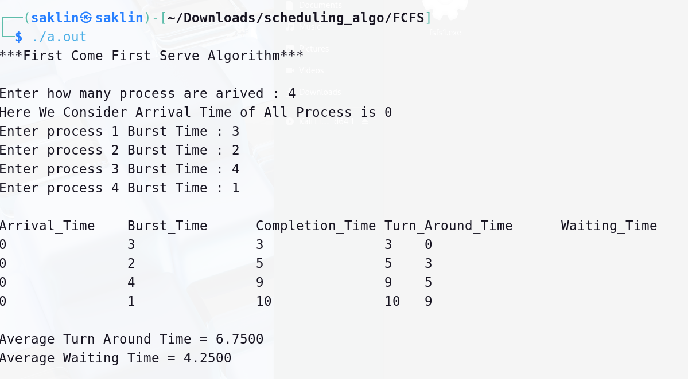
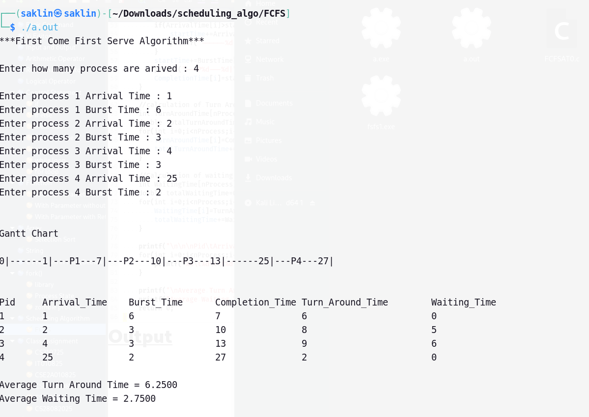

Code for FCFS Algorithm where we considered All process Arrival Time is 0.
#include<stdio.h>
int main(){
printf("***First Come First Serve Algorithm***\n\n");
printf("Enter how many process are arived : ");
int nProcess;
scanf("%d",&nProcess);
//HERE WE CONSIDER ARRIVAL TIME OF ALL PROCESS IS 0
printf("Here We Consider Arrival Time of All Process is 0\n");
int ArrivalTime[nProcess];
int BurstTime[nProcess];
for(int i=0;i<nProcess;i++){
ArrivalTime[i]=0;
printf("Enter process %d Burst Time : ",i+1);
scanf("%d",&BurstTime[i]);
}
//calculation of completion time
int CompletionTime[nProcess];
int startTime=0;
for(int i=0;i<nProcess;i++){
startTime+=BurstTime[i];
CompletionTime[i]=startTime;
}
//calculation of Turn Around Time
int TurnAroundTime[nProcess];
double totalTurnAroundTime=0;
for(int i=0;i<nProcess;i++){
TurnAroundTime[i]=CompletionTime[i]-ArrivalTime[i];
totalTurnAroundTime+=TurnAroundTime[i];
}
//Calculation of waiting time
int WaitingTime[nProcess];
double totalWaitingTime=0;
for(int i=0;i<nProcess;i++){
WaitingTime[i]=TurnAroundTime[i]-BurstTime[i];
totalWaitingTime+=WaitingTime[i];
}
printf("\nArrival_Time\tBurst_Time\tCompletion_Time\tTurn_Around_Time\tWaiting_Time\n");
for(int i=0;i<nProcess;i++){
printf("%d\t\t%d\t\t%d\t\t%d\t\t\t%d\n",ArrivalTime[i],BurstTime[i],CompletionTime[i],TurnAroundTime[i],WaitingTime[i]);
}
printf("\nAverage Turn Around Time = %.4f\n",(totalTurnAroundTime/nProcess));
printf("Average Waiting Time = %.4f\n",(totalWaitingTime/nProcess));
return 0;
}
Output

Code for Actual FCFS Algorithm
#include<stdio.h>
void advanceSelectionSort(int Arr1[],int Arr2[],int Arr3[],int min,int max){
for(int i=min;i<max;i++){
int minIndex=i;
for(int j=i+1;j<=max;j++){
if(Arr1[j]<Arr1[minIndex]){
minIndex=j;
}
}
int temp = Arr1[i];
Arr1[i] = Arr1[minIndex];
Arr1[minIndex] = temp;
temp = Arr2[i];
Arr2[i] = Arr2[minIndex];
Arr2[minIndex] = temp;
temp = Arr3[i];
Arr3[i] = Arr3[minIndex];
Arr3[minIndex] = temp;
}
}
int main(){
printf("***First Come First Serve Algorithm***\n\n");
printf("Enter how many process are arived : ");
int nProcess;
scanf("%d",&nProcess);
int ArrivalTime[nProcess];
int BurstTime[nProcess];
int pid[nProcess];
printf("\n");
for(int i=0;i<nProcess;i++){
pid[i]=i+1;
printf("Enter process %d Arrival Time : ",i+1);
scanf("%d",&ArrivalTime[i]);
printf("Enter process %d Burst Time : ",i+1);
scanf("%d",&BurstTime[i]);
}
advanceSelectionSort(ArrivalTime,BurstTime,pid,0,nProcess-1);
printf("\n\nGantt Chart\n\n");
//calculation of completion time
int CompletionTime[nProcess];
int startTime=0;
printf("%d|",startTime);
for(int i=0;i<nProcess;i++){
if(ArrivalTime[i]>startTime){
startTime+=ArrivalTime[i]-startTime;
printf("------%d|",startTime);
}
startTime+=BurstTime[i];
printf("---P%d---%d|",pid[i],startTime);
CompletionTime[i]=startTime;
}
//calculation of Turn Around Time
int TurnAroundTime[nProcess];
double totalTurnAroundTime=0;
for(int i=0;i<nProcess;i++){
TurnAroundTime[i]=CompletionTime[i]-ArrivalTime[i];
totalTurnAroundTime+=TurnAroundTime[i];
}
//Calculation of waiting time
int WaitingTime[nProcess];
double totalWaitingTime=0;
for(int i=0;i<nProcess;i++){
WaitingTime[i]=TurnAroundTime[i]-BurstTime[i];
totalWaitingTime+=WaitingTime[i];
}
printf("\n\n\nPid\tArrival_Time\tBurst_Time\tCompletion_Time\tTurn_Around_Time\tWaiting_Time\n");
for(int i=0;i<nProcess;i++){
printf("%d\t%d\t\t%d\t\t%d\t\t%d\t\t\t%d\n",pid[i],ArrivalTime[i],BurstTime[i],CompletionTime[i],TurnAroundTime[i],WaitingTime[i]);
}
printf("\nAverage Turn Around Time = %.4f\n",(totalTurnAroundTime/nProcess));
printf("Average Waiting Time = %.4f\n",(totalWaitingTime/nProcess));
return 0;
}
Output
